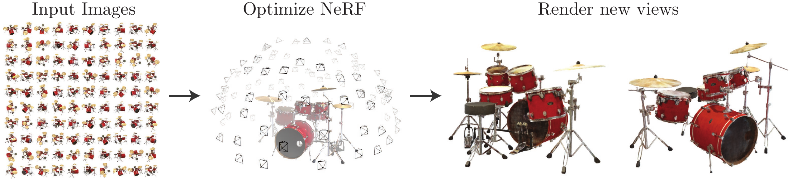
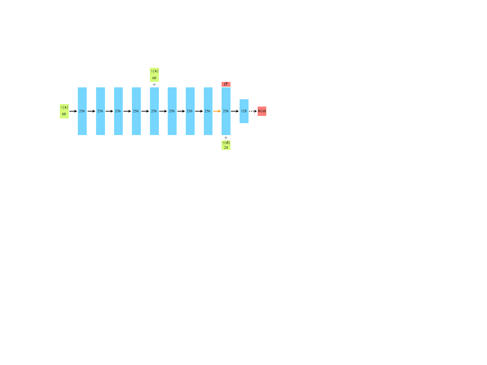
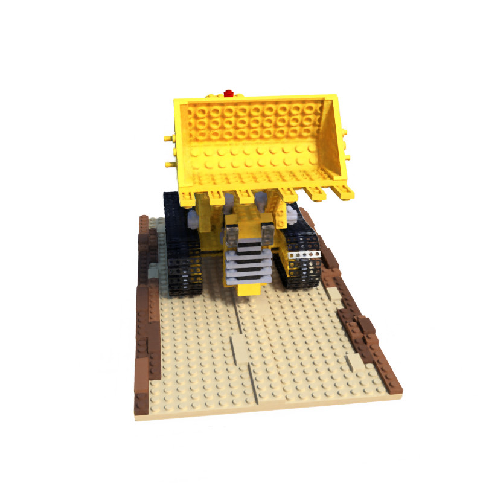
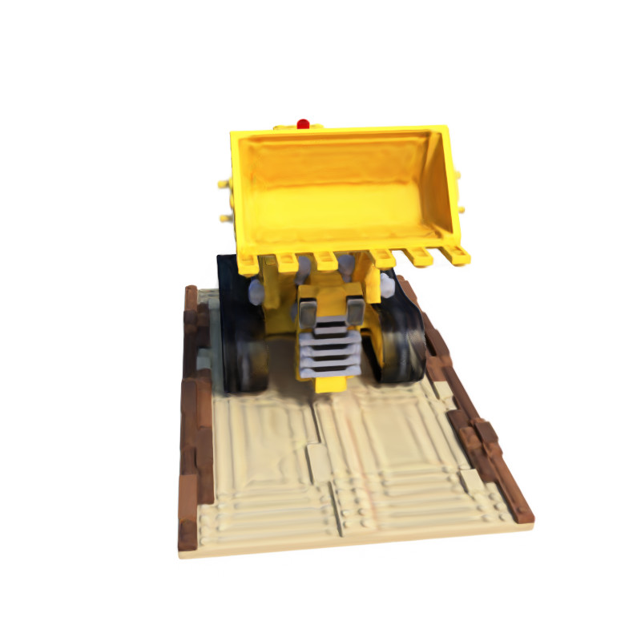
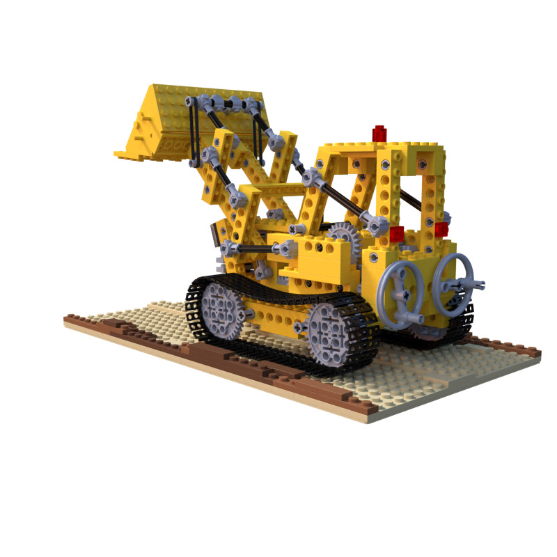

An interactive explainer
NeRF: a scene is a function you can query
In 2020, a five-author paper proposed something that sounds absurd: store an entire 3D scene — geometry, color, the way a wet surface glints as you move — inside the weights of a single small neural network with no 3D data structure at all. No mesh, no voxels, no point cloud. Just a function that takes a point in space and a viewing direction and returns a color and a density. Render by firing a ray through each pixel and integrating. The result was a leap in photorealistic novel view synthesis so large it spawned a thousand follow-ups and reorganized an entire subfield — 40.15 dB PSNR on diffuse synthetic scenes vs 34.38 for the prior best, and the first method that made view-dependent reflections look genuinely real. This is the paper that defined the problem 3D Gaussian Splatting would later win on speed. Here is how it works, from the integral up.

The classic way to do novel view synthesis — show a computer some photos of a scene, ask it to render the scene from a viewpoint it never saw — was to build an explicit 3D model: triangulate a mesh, carve a voxel grid, or warp between nearby images. Each carried a hard ceiling. Meshes struggle with fuzz and transparency; voxels eat memory cubically with resolution; image warping breaks when the new view is far from any input.
NeRF threw out the data structure. It asks: what if the scene is just a continuous function, and we approximate that function with a neural network? Feed in a 3D point and a viewing direction; get back how much light is emitted there in that direction, and how opaque the point is. The scene lives nowhere in particular — it's smeared across the weights of a multilayer perceptron. To render, you don't traverse a structure; you evaluate the function at hundreds of points along each camera ray and integrate.
Two ingredients made this go from "cute idea that produces blurry mush" to state of the art: a positional encoding that lets a network represent sharp detail, and a hierarchical sampling scheme that spends compute where the scene actually is. We'll build the whole method up from its central object — the volume rendering integral along a ray — and finish by placing neural fields in the full landscape of 3D representations.
1. The representation: a 5D radiance field
NeRF represents a scene as a single continuous function of five variables: three for a position $\vx = (x,y,z)$ and two for a viewing direction (an angle pair, written in practice as a 3D unit vector $\vd$). The function returns an emitted RGB color $\vc$ and a scalar volume density $\sigma$. A multilayer perceptron with weights $\Th$ approximates it:
$$ F_\Th : (\vx, \vd) \;\longmapsto\; (\vc, \sigma) $$
Volume density $\sigma(\vx)$ is the key abstraction. Read it as the differential probability that a ray terminates — hits something — in an infinitesimal step at $\vx$. High density = solid surface; zero density = empty air. Crucially, the scene is not made of surfaces at all; it is a cloud of density everywhere in space, which is exactly why NeRF handles smoke, hair, foliage, and glass so gracefully where a mesh cannot.
One design choice does enormous work: density depends on position only, but color depends on position and direction. This is enforced architecturally — the MLP runs 8 layers on the encoded position to produce $\sigma$ plus a 256-dim feature, then concatenates the viewing direction and runs one more layer to produce color. Making $\sigma$ view-independent forces the geometry to be consistent across all viewpoints (you can't cheat by inventing different shapes per camera), while letting color vary with direction is what captures specular highlights — the shifting glint on a glossy surface as you walk around it.

2. Volume rendering: turning a field into a pixel
The function above describes the scene. To get an image you need a rule for turning the field along a camera ray into a single pixel color. NeRF borrows the classical volume rendering integral. For a ray $\vr(t) = \vo + t\vd$ from the camera origin $\vo$ in direction $\vd$, the expected color between near and far bounds $t_n, t_f$ is:
$$ C(\vr) = \int_{t_n}^{t_f} T(t)\,\sigma(\vr(t))\,\vc(\vr(t),\vd)\,dt, \qquad T(t) = \exp\!\Big(\!-\!\int_{t_n}^{t}\!\sigma(\vr(s))\,ds\Big) $$
Unpack it. At each depth $t$, the amount of color the ray picks up is the emitted color $\vc$, weighted by the density $\sigma$ there (how much stuff is present), weighted again by the transmittance $T(t)$ — the probability the ray got this far without being blocked. $T$ starts at 1 at the camera and decays as it passes through density. The product $T(t)\sigma(t)$ is a weight that automatically peaks at the first opaque surface and falls to nothing behind it. Occlusion comes out for free.
You can't integrate a neural network analytically, so NeRF estimates the integral by quadrature. Partition the ray into $N$ bins and draw one stratified sample per bin (uniformly at random within it — so over training the network gets queried at continuous positions, not a fixed grid). The integral becomes a sum that is exactly classical alpha compositing:
$$ \hat{C}(\vr) = \sum_{i=1}^{N} T_i\,\big(1 - e^{-\sigma_i \delta_i}\big)\,\vc_i, \qquad T_i = \exp\!\Big(\!-\!\sum_{j<i}\sigma_j \delta_j\Big), \qquad \alpha_i = 1 - e^{-\sigma_i \delta_i} $$
where $\delta_i$ is the distance between adjacent samples. This sum is trivially differentiable in every $(\vc_i, \sigma_i)$, so gradients of a pixel error flow straight back into the MLP weights. That differentiability is the entire game: it is what lets you optimize a scene from nothing but photos.
The whole rendering pipeline in one loop. A ray is marched through the scene; the MLP returns a color and density at each sample; the density profile $\sigma(t)$ and transmittance $T(t)$ determine weights $w_i = T_i(1-e^{-\sigma_i\delta_i})$ that spike at the surface; the weighted colors sum into the pixel.
3. Positional encoding: defeating spectral bias
Here is the single most surprising result in the paper. If you feed raw coordinates $(x,y,z,\theta,\phi)$ straight into the MLP, NeRF produces blurry, oversmoothed mush — no sharp edges, no fine texture. The culprit is spectral bias: deep ReLU networks are strongly biased toward learning low-frequency functions. A coordinate network simply cannot fit the high-frequency detail real scenes contain.
The fix is almost embarrassingly simple. Before the network sees a coordinate, lift it into a high-dimensional space with a bank of sinusoids at geometrically increasing frequencies:
$$ \gamma(p) = \big(\sin(2^0\pi p), \cos(2^0\pi p), \ldots, \sin(2^{L-1}\pi p), \cos(2^{L-1}\pi p)\big) $$
applied to each coordinate separately. The paper uses $L=10$ for position (20 values per coordinate) and $L=4$ for direction. With this Fourier feature mapping in front, the same MLP can suddenly represent crisp geometry and texture. The encoding hands the network a basis of high-frequency functions so it no longer has to manufacture them from scratch against its own bias. (It's the same sinusoidal trick as a Transformer's positional encoding, used for a completely different reason — here, to inject high frequency, not order.)


4. Hierarchical sampling: don't waste queries on empty space
Marching a ray with uniform samples is wasteful: most of a ray is empty air or hidden behind the first surface, yet a naive scheme queries the (expensive) MLP there just as densely as at the surface. NeRF fixes this by optimizing two networks — a "coarse" and a "fine" — and sampling in two passes.
First, evaluate the coarse network at $N_c$ stratified samples. Its rendering weights, normalized, form a piecewise-constant probability density along the ray — a map of where the scene probably is:
$$ \hat{C}_c(\vr) = \sum_i w_i \vc_i, \qquad w_i = T_i\big(1 - e^{-\sigma_i \delta_i}\big), \qquad \hat{w}_i = w_i \big/ \textstyle\sum_j w_j $$
Then draw a second set of $N_f$ samples from that density via inverse-transform sampling, so new samples concentrate near the surface. Evaluate the fine network on all $N_c + N_f$ samples combined. The paper uses $N_c = 64$ and $N_f = 128$. Same compute, far more of it spent where it changes the image.
5. The full training recipe
Everything assembles into one optimization, run separately per scene. The only inputs are RGB photos and their camera poses (from COLMAP structure-from-motion for real captures). There is no pretraining and no 3D supervision — only the photos.
for each iteration:
sample a batch of 4096 rays from random pixels across all photos
for each ray:
# coarse pass
t_i ~ stratified samples, N_c = 64
(c_i, σ_i) = MLP_coarse(γ(x_i), γ(d))
Ĉ_c = Σ T_i (1 − e^(−σ_i δ_i)) c_i # alpha composite
# fine pass
t_j ~ inverse-sample from coarse weights, N_f = 128
(c_k, σ_k) = MLP_fine(γ(x_k), γ(d)) # on all 64+128 samples
Ĉ_f = Σ ...
loss = Σ_rays ‖Ĉ_c − C‖² + ‖Ĉ_f − C‖² # plain squared pixel error
Adam step (lr 5e-4 → 5e-5)The loss is just squared error between rendered and true pixel colors, for both the coarse and fine renderings (the coarse term is kept so its weights stay good enough to guide fine sampling). Positional encoding uses $L=10$ for $\vx$ and $L=4$ for $\vd$. Convergence takes 100–300k iterations — roughly 1–2 days on a single V100. That last number is the headline cost, and the reason the entire next generation of work was about making NeRF fast.
6. Results
Against the strong baselines of the day — Scene Representation Networks (SRN), Neural Volumes (NV), and Local Light Field Fusion (LLFF) — NeRF won on nearly every metric across synthetic and real datasets, often by large margins.
| Dataset | Metric | NeRF | Best baseline |
|---|---|---|---|
| Diffuse Synthetic 360° | PSNR (↑) | 40.15 | 34.38 (LLFF) |
| LPIPS (↓) | 0.023 | 0.048 (LLFF) | |
| Realistic Synthetic 360° | PSNR (↑) | 31.01 | 26.05 (NV) |
| LPIPS (↓) | 0.081 | 0.114 (LLFF) | |
| Real Forward-Facing | PSNR (↑) | 26.50 | 24.13 (LLFF) |
| LPIPS (↓) | 0.250 | 0.212 (LLFF) |
From Table 1 of the paper. NeRF leads everywhere except LPIPS on real forward-facing scenes, where LLFF edges it; the authors argue their renderings are more multiview-consistent with fewer artifacts (best seen in the video).

The ablation table is the real argument. Stripping each ingredient from the full model (PSNR 31.01 on realistic synthetic scenes) costs dearly: no positional encoding drops it to 28.77, no view dependence to 27.66, and removing all three of positional encoding, view dependence, and hierarchical sampling collapses it to 26.67. Each piece is load-bearing.
7. Why it works
Three properties combine to make a tiny network beat elaborate explicit models.
Continuity buys unlimited resolution
Because the scene is a function evaluated at arbitrary real-valued coordinates — not stored in a grid — there is no resolution cap and no cubic memory blow-up. A 5 MB network can encode detail that would take gigabytes of voxels. Stratified sampling reinforces this: the network is queried at continuously varying positions during training, so it learns a genuinely continuous field rather than memorizing a fixed set of points.
Differentiable rendering turns photos into 3D supervision
The volume rendering sum is differentiable end-to-end, so a 2D pixel error becomes a gradient on the 3D field. NeRF never sees a 3D ground truth; it discovers geometry purely because that is the only consistent explanation for dozens of 2D photos. Forcing density to be view-independent is what makes that explanation a coherent 3D shape instead of a per-view hack.
Positional encoding fights the network's own bias
Spectral bias would have doomed the coordinate-MLP approach. Fourier features are the cheap, decisive countermeasure — and the insight rippled far past NeRF into a general lesson about how to feed continuous coordinates to neural networks (later formalized through the neural tangent kernel). It is the detail most worth stealing for problems that have nothing to do with graphics.
8. Where NeRF sits among 3D representations
NeRF is the canonical implicit, volumetric representation: the geometry is a function you must query, and it models density everywhere in space rather than a surface. That corner of the design space has distinct strengths and a distinct, fatal-until-fixed weakness — speed. The table below places it against the alternatives; for the explicit-volumetric counterpart that broke NeRF's speed ceiling, see the companion 3D Gaussian Splatting post.
| Representation | Type | Pros | Cons |
|---|---|---|---|
| Triangle mesh | explicit · surface | decades of tooling and GPU rasterization; compact; native textures, rigging, physics; crisp silhouettes | fixed topology hard to optimize from photos; poor at fuzz/transparency; quality capped by triangle budget |
| Voxel grid | explicit · volume | regular structure → fast lookup and 3D convolution; simple occupancy queries | memory grows cubically with resolution; blocky without sparse octrees |
| SDF / implicit surface | implicit · surface | watertight surfaces of any topology; exact normals and distances; best geometry from images (NeuS, Neuralangelo) | needs sphere tracing / marching cubes; slow; weak on fuzz and transparency; appearance bolted on |
| NeRF (MLP field) | implicit · volume | tiny (a few MB); continuous → no resolution limit; principled volume rendering; superb view-dependent effects; graceful with fuzz, hair, glass; learns from photos alone | ray marching = hundreds of MLP queries per pixel → slow to train (1–2 days) and render (seconds/frame); scene entangled in weights → not editable; no direct geometry access |
| Hybrid grid NeRF (InstantNGP, Plenoxels) | hybrid · volume | keeps NeRF's volumetric strengths; trains in minutes; small-to-moderate models | still ray-marched → ~10 fps ceiling; resolution/hash limits on fine detail; still not editable |
| 3D Gaussians | explicit · volume | real-time (100–1000+ fps) via rasterization; NeRF-level quality incl. view-dependence; fast training; explicit and editable | memory-hungry (100s of MB); no clean surface without fixes; popping; floaters; relighting hard |
The story since 2020 reads as a single arc. NeRF proved that a differentiable, continuous, volumetric field could win on quality. The hybrid-grid works (InstantNGP, Plenoxels) kept the volume rendering but replaced the slow MLP with fast lookups, cutting training to minutes. Then 3D Gaussian Splatting kept the same alpha-compositing math but made the representation explicit — a cloud of primitives you rasterize instead of a function you march — and finally broke the real-time barrier. NeRF didn't lose; it set the target, and the volume-rendering equation at its heart is still running underneath its successors.
9. The bottom line
NeRF is one idea executed with unusual taste: a scene is a continuous 5D function from (position, direction) to (color, density); render it by integrating that function along camera rays with classical volume rendering; optimize it end-to-end from photos because the integral is differentiable. Two small additions — Fourier-feature positional encoding and coarse-to-fine sampling — turn the idea from blurry to photorealistic.
Open problems (that became whole research lines)
- Speed. 1–2 days to train, seconds to render. InstantNGP, Plenoxels, and ultimately Gaussian splatting attacked this directly.
- Per-scene optimization. Each scene is its own network. Generalizable and feed-forward NeRFs (pixelNeRF, IBRNet) tried to amortize this across scenes.
- Static, controlled capture. The original assumes a rigid scene and accurate poses. Dynamic NeRFs, NeRF-in-the-wild, and pose-free variants followed.
- Aliasing and scale. A point-sampled ray ignores how much of the scene a pixel covers; Mip-NeRF and Mip-NeRF360 fixed this with conical frustums.
- Editing and relighting. Appearance is baked into opaque weights; decomposing geometry, material, and lighting (NeRF inverse rendering) is still hard.
The mental model to keep
A NeRF is a scene compressed into a function. There is no model of the chair in memory — there is a network that, asked "what color and how solid is this exact point, seen from this exact angle?", answers consistently enough that integrating its answers along a ray reproduces a photograph. Once you hold that picture, its whole family tree — the fast grids, the explicit splats, the generative 3D models — reads as variations on one question: what is the best way to store, and then render, a differentiable field of light?